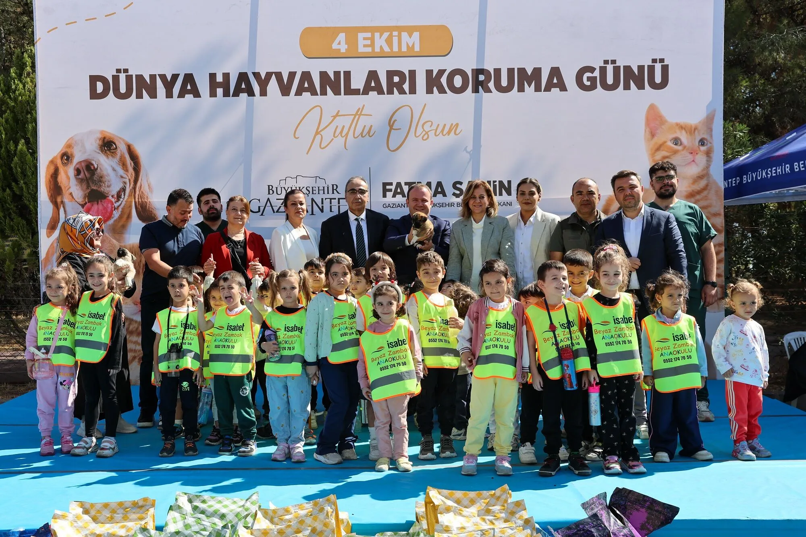

Gaziantep Hayvanat Bahçesi’nde her yıl düzenlenen Dünya Hayvanları Koruma Günü kutlamaları, çocuklara ve ziyaretçilere hayvan sevgisi ile çevre bilincini kazandırmayı amaçlayan kapsamlı etkinliklerle gerçekleşir. Bu özel günde rehberler eşliğinde yapılan bilgilendirme turlarıyla öğrenciler ve aileler hayvanların yaşam döngüsü, ekolojik önemi ve korunma gerekliliği hakkında bilgi edinir; ayrıca hayvan besleme gösterileri düzenlenerek çocukların hayvanlarla daha yakın bağ kurmaları sağlanır. Etkinlik kapsamında açılan fotoğraf sergileri ve bilgilendirme panoları, nesli tehlike altında olan türlerin tanıtımına ve farkındalık yaratmaya hizmet eder. Çocuklara yönelik çevre bilinci oyunları ve doğa atölyeleri ile eğlenceli bir öğrenme ortamı oluşturulur, ziyaretçiler ise rehberli safari parkı gezileriyle hayvanları doğal yaşam alanlarında gözlemleme fırsatı bulur. Böylece Dünya Hayvanları Koruma Günü, Gaziantep Hayvanat Bahçesi’nde hem eğitici hem de keyifli bir kutlama olarak doğa sevgisini ve hayvan hakları bilincini pekiştirir.